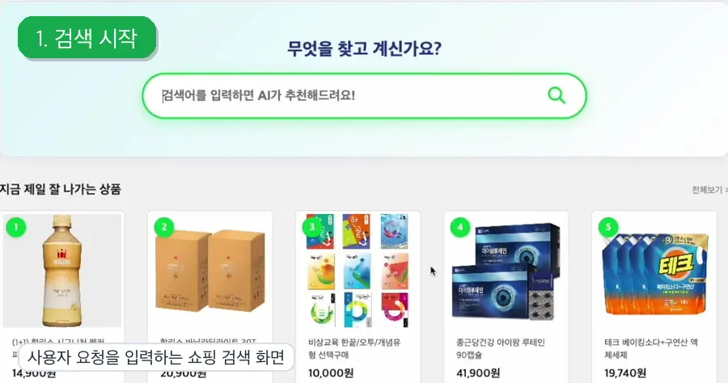
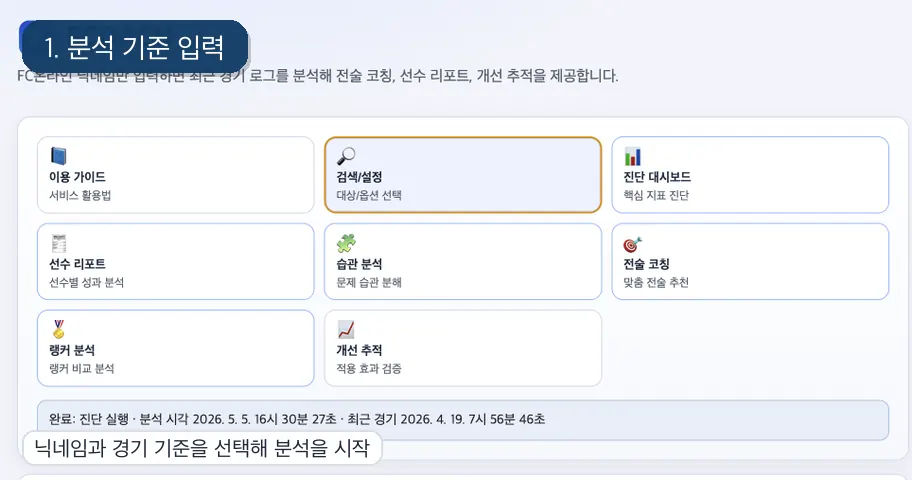
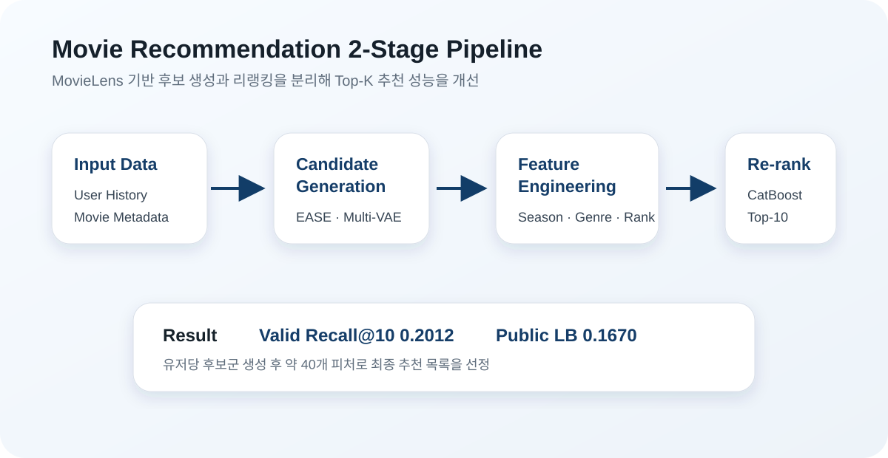
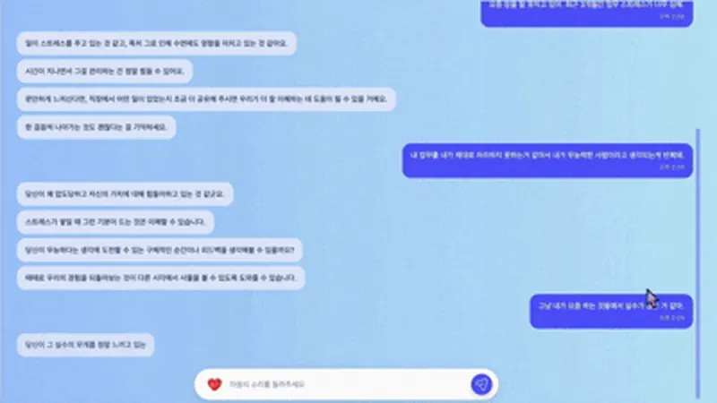

PORTFOLIO
추천 시스템과
서비스 구현을 연결하는
주니어 ML 엔지니어 김민재입니다
세종대학교 데이터사이언스학과에서 데이터 분석과 머신러닝 기반을 쌓고,
네이버 커넥트재단 부스트캠프 AI Tech 8기와 개인 프로젝트를 통해 추천 시스템, 검색/리랭킹, LLM 챗봇, 웹 서비스 구현 경험을 확장했습니다.
추천 시스템
검색 / 리랭킹
LLM 챗봇
데이터 분석
대표 프로젝트 한눈에 보기
RMSE
자연어 요청을 검색 조건으로 해석하고 Retrieval, Reranking, LLM 설명 생성을 연결한 추천 시스템
fcoach
FC Online 경기 데이터를 수집하고 KPI 기반 진단, 액션 제안, 웹 서비스 배포까지 구현한 개인 프로젝트
Movie Recommendation
EASE, Multi-VAE 후보 생성과 CatBoost 리랭킹을 결합한 2-Stage 영화 추천 시스템
Sound_of_Heart
GPT 기반 상담형 챗봇과 커뮤니티 기능을 결합한 멘탈케어 서비스, 세종대 창의설계경진대회 최우수상
핵심 역량
추천·랭킹 모델링
후보 생성, 리랭킹, 성능 평가를 분리해 실험하고 추천 품질을 개선합니다.
사용자 데이터 기반 문제 정의
경기 로그, 리뷰, 메타데이터를 분석해 KPI와 피처를 설계하고 문제를 구조화합니다.
분석 결과의 서비스화
분석 로직을 API와 웹 화면으로 연결해 사용자가 이해하고 실행할 수 있는 흐름으로 구현합니다.
교육 / 수상
세종대학교 데이터사이언스학과
2019.03 - 2025.08 졸업 · 전체 학점 4.08 / 4.5
부스트캠프 AI Tech 8기
2025.09 - 2026.02 수료
제19회 세종대학교 창의설계경진대회
Sound_of_Heart 프로젝트로 최우수상 수상
구분
네이버 커넥트재단 부스트캠프 AI Tech 8기 최종 팀 프로젝트
사용 기술
Python, FastAPI, PyTorch, CatBoost, PostgreSQL, Redis, Docker, GitHub Actions, k3s
목표
자연어 의도를 반영해 검색·추천·설명 생성을 연결하는 대화형 추천 시스템 구현
역할
EDA, 추천 시스템 아키텍처 설계, 프롬프트 엔지니어링
구현 구조
Retrieval + Reranking + LLM 기반 하이브리드 추천 파이프라인
링크
프로젝트 개요
- Amazon Reviews'23 Electronics 도메인 데이터 기반
- 리뷰 데이터 9,263,526건, 메타데이터 193,396개 활용
- Dual-LLM, Filtering, Two-Tower Retrieval, ML Reranker, Explainable Recommendation 구조 적용
내가 한 일
- 전자제품 도메인 EDA 수행 및 추천 시스템 아키텍처 설계
- 사용자 자연어 요청을 검색 가능한 형태로 정제하는 프롬프트 흐름 설계
- 검색 공간 축소, 후보 생성, 리랭킹, 설명 생성이 이어지는 파이프라인 정의

실제 서비스 데모 화면: 검색 시작, 자연어 요청, 추천 결과, 추가 조건 반영 흐름을 부드러운 애니메이션으로 확인
성과 및 개선점
- 의도 해석, 검색, 리랭킹, 설명 생성을 분리한 하이브리드 추천 구조 설계
- 대규모 리뷰 데이터 환경에서 확장 가능한 검색/추천 파이프라인 설계 경험 확보
- LLM 기반 의도 해석의 품질을 평가할 수 있는 정량 지표 체계는 추가 보강이 필요
구분
개인 프로젝트, 데이터 기반 코칭 서비스
사용 기술
Python, FastAPI, Next.js, SQLite, Nexon Open API, FC Online DataCenter
목표
행동 데이터를 바탕으로 문제를 진단하고, 액션과 검증 지표까지 제안하는 서비스 구현
역할
기획, 데이터 수집 API 연동, KPI 설계, 분석 API/웹 서비스 구현
구현 범위
데이터 수집 → KPI 계산 → 분석 API → 웹 화면 → Vercel 배포
링크
문제 정의
단순 조회형 서비스는 결과를 보여주는 데는 강하지만, 다음 액션까지 연결되지 않는 경우가 많습니다. fcoach는 경기 행동 데이터를 바탕으로 진단 → 개입 → 검증 흐름을 하나의 제품 경험으로 묶는 것을 목표로 했습니다.
Nexon Open API
FastAPI
Next.js
SQLite
KPI
핵심 흐름
- 외부 API 기반 경기 데이터 수집 및 정규화
- 최근 5·10·30경기 구간별 KPI 계산
- 플레이 문제 유형 진단과 액션 카드 제안
- 전후 지표 비교를 통한 개선 흐름 설계

실제 배포 서비스 화면: 닉네임 입력부터 진단 대시보드, 선수 리포트, 전술 코칭까지 부드러운 애니메이션으로 확인
내가 한 일
- Nexon Open API와 FC Online DataCenter를 조합한 데이터 수집 경로 설계
- 모드와 경기 수 구간별로 비교 가능한 KPI 체계 구성
- FastAPI 기반 분석 API와 Next.js 기반 웹 서비스 구현
성과 및 개선점
- 행동 데이터를 분석 결과에서 끝내지 않고 서비스 흐름과 액션 제안 구조로 연결
- 단순 조회형이 아닌 액션 제안형 서비스 구조 구현
- 장기 운영 시 관리형 DB 전환과 사용자별 변화 추적 고도화가 필요
구분
네이버 커넥트재단 부스트캠프 AI Tech 8기 팀 프로젝트
사용 기술
Python, PyTorch, RecBole, CatBoost, Pandas
목표
MovieLens 기반 Top-K 추천 성능 향상과 2-Stage 추천 파이프라인 구축
역할
메타데이터 EDA, Feature Engineering, 2-Stage Re-ranking 시스템 설계
성과
Valid Recall@10 0.2012, Public LB 0.1670
링크
문제 정의 / 구조
단순한 정적 선호 예측을 넘어, 시청 순서와 누락 아이템까지 고려해야 하는 추천 문제를 다뤘습니다. 후보군 생성과 리랭킹을 분리해 정적 취향과 순차적 패턴을 함께 반영하는 구조를 설계했습니다.
EASE
Multi-VAE
CatBoost Ranker
genre ratio
내가 한 일
- 메타데이터 정제 및 EDA 수행
- 계절, 시간대, 장르 비율, 영화 인기도/랭킹 기반 피처 설계
- 감독/작가 1:N 관계 정제와 TF-IDF 기반 장르 표현 개선
- 후보 생성과 리랭킹이 분리된 파이프라인 설계

후보 생성과 리랭킹을 분리하고, 메타데이터 피처를 결합해 Top-K 추천 성능을 개선한 흐름
성과
- Valid Recall@10 0.2012, Public LB 0.1670
- 유저당 200개 후보군 생성 후 약 40개 피처로 최종 Top-10 선정
- 후보군 생성과 리랭킹을 분리한 추천 구조 설계 경험 확보
개선 및 확장 포인트
- 후보 생성 모델과 리랭킹 모델의 역할을 분리해 실험 단위를 명확히 관리
- 성능 개선 과정에서 피처 중요도와 검증 지표를 함께 확인하는 방식의 중요성 확인
- 서비스 적용 단계에서는 사용자 피드백 기반 재학습 구조와 온라인 평가 체계가 필요
구분
팀 프로젝트, 상담형 LLM 챗봇과 커뮤니티 서비스
사용 기술
JavaScript, GPT API, Prompt Engineering, Chatbot Flow, Community
목표
정서적 어려움을 겪는 사용자를 위한 상담형 챗봇과 커뮤니티 기반 멘탈케어 서비스 구현
역할
PM, 프론트엔드, 챗봇 대화 흐름 및 프롬프트 요구사항 정리
핵심 관점
CBT, ACT, DBT 관점을 반영한 대화 흐름과 사용자 경험 설계
링크

상담형 챗봇 대화 화면: 사용자 발화를 바탕으로 감정과 상황을 파악하고 후속 질문과 행동 제안으로 연결
문제 정의 / 핵심 흐름
상담형 챗봇은 단순 위로 문장보다, 감정과 상황을 파악하고 안전한 범위 안에서 자기 이해와 다음 행동으로 이어지는 구조가 필요하다고 보았습니다.
- 사용자 발화에서 감정과 상황 맥락 파악
- 상담 이론 기반 응답 방향 선택
- 프롬프트를 통해 공감, 질문, 행동 제안을 단계적으로 구성
- 챗봇 경험과 커뮤니티 기능을 함께 연결
내가 한 일
- PM / 프론트엔드 역할로 서비스 흐름과 주요 화면 구현에 참여
- CBT, ACT, DBT 관점을 반영한 응답 전략 구성
- 감정 탐색, 인지 재구성, 행동 제안으로 이어지는 흐름 정리
- 커뮤니티 기능이 챗봇 경험과 함께 작동하도록 서비스 구조 설계에 기여
성과 및 개선점
- 단순 Q&A가 아니라 상담 이론과 대화 단계를 반영한 챗봇 경험 설계
- 정서적 지원과 커뮤니티 참여가 이어지는 서비스 흐름 구성
- 실서비스 확장 시 안전성 평가, 위기 대응 정책, 상담 품질 검증 체계 보강 필요